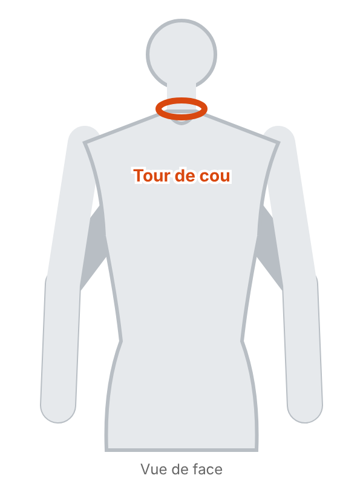
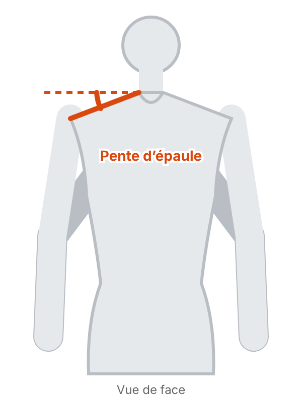
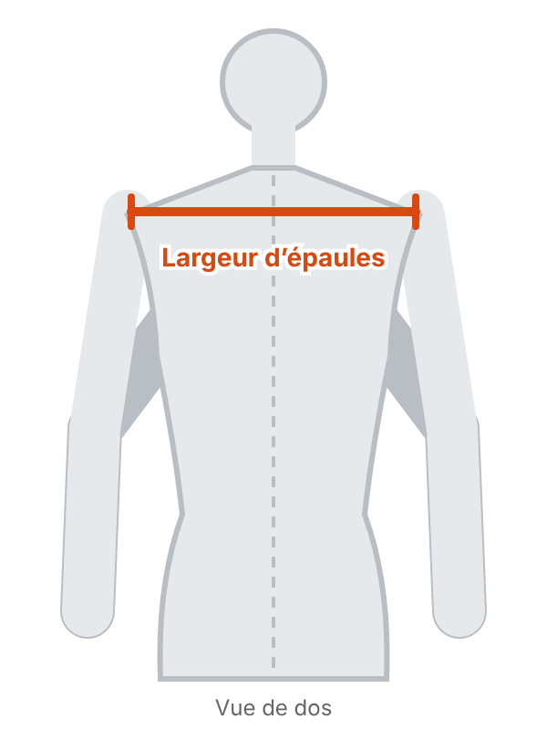
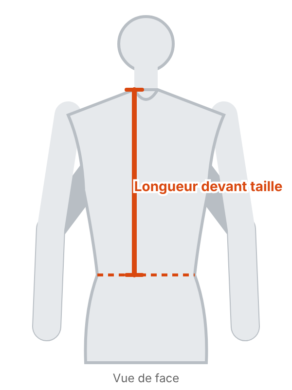
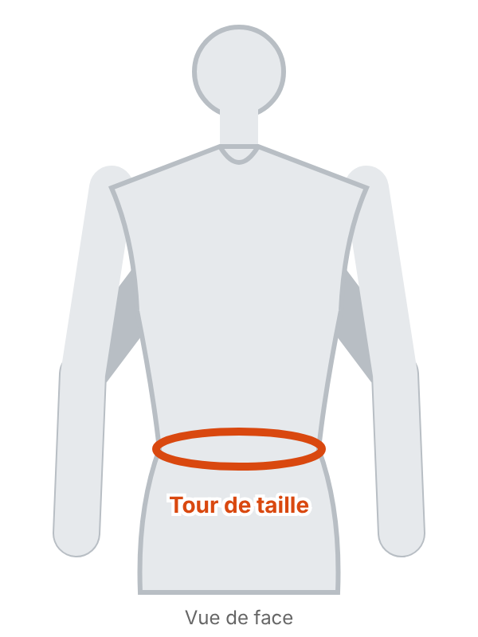
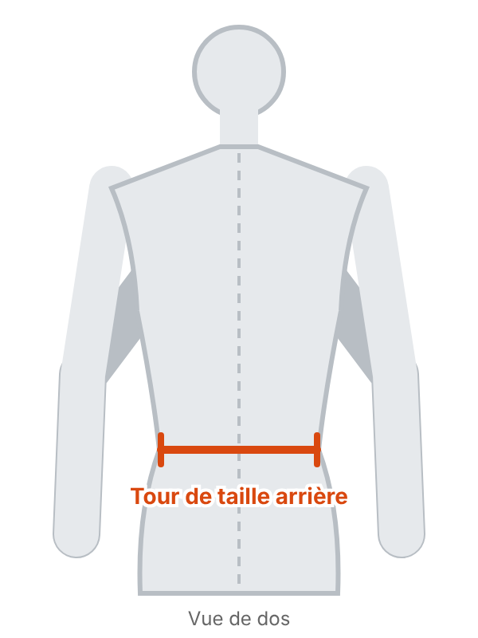
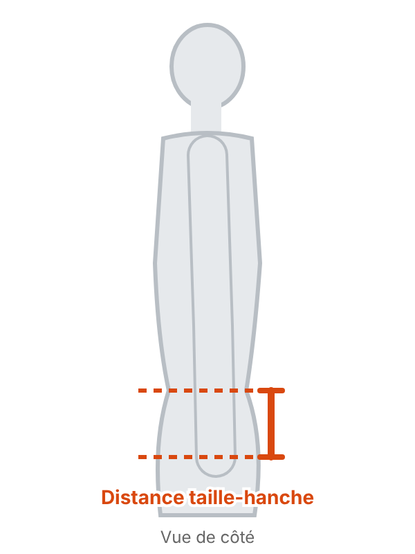
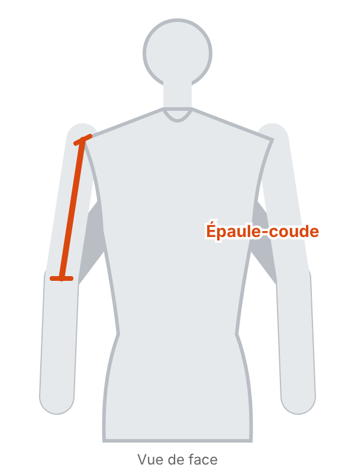
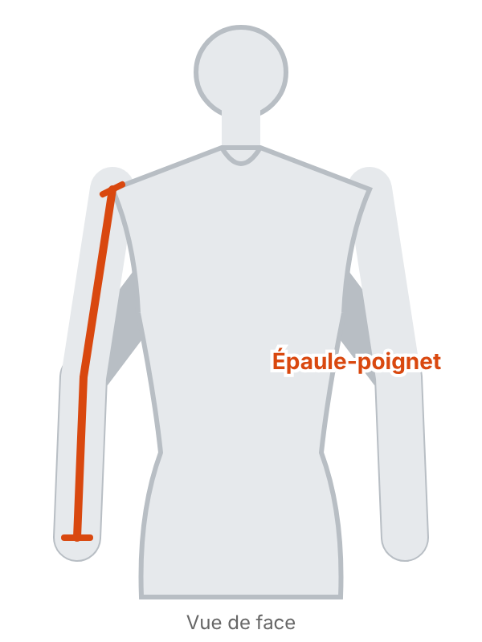

Dix mesures suffisent. Prenez-les sur vous ou sur la personne concernée, en sous-vêtements ou avec des vêtements très fins, le mètre ruban à plat contre le corps, sans serrer.
Comment prendre vos mesures

Tour de cou : À la base du cou, ruban souple posé à plat, sans serrer.

Pente d’épaule : Angle entre l’horizontale et la ligne d’épaule, du cou au bout de l’épaule. Le plus simple : vous faire photographier de face, bras le long du corps, puis mesurer l’angle au rapporteur sur la photo. La précision n’est pas critique.

Largeur d’épaules : Dans le dos, d’un bout d’épaule à l’autre (là où l’épaule rejoint le bras).

Longueur devant taille : Sur le devant, du haut de l’épaule, à la base du cou, jusqu’à la taille.

Tour de taille : À l’endroit où la taille est la plus fine, sans serrer.

Tour de taille arrière : Dans le dos, d’un côté à l’autre à la hauteur de la taille, avec un mètre ruban.

Distance taille-hanche : Sur le côté, distance verticale entre la ligne de taille et la ligne des hanches.

Épaule-coude : Du bout de l’épaule au coude, bras légèrement plié.

Épaule-poignet : Du bout de l’épaule au poignet en passant par le coude, bras légèrement plié.